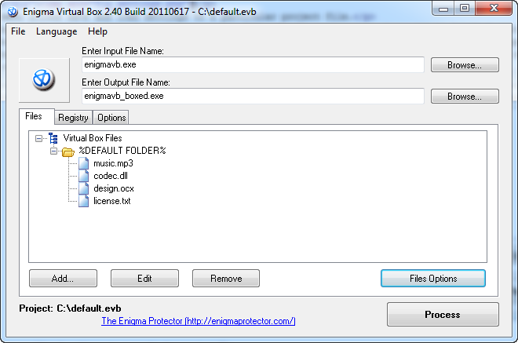
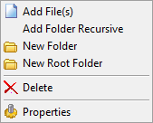
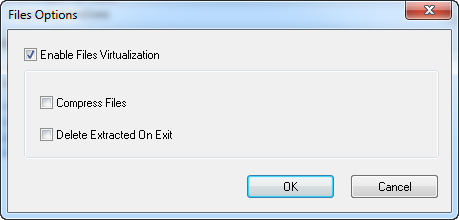
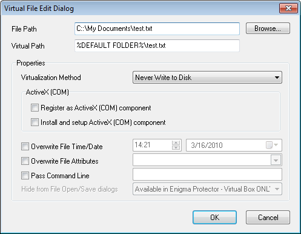
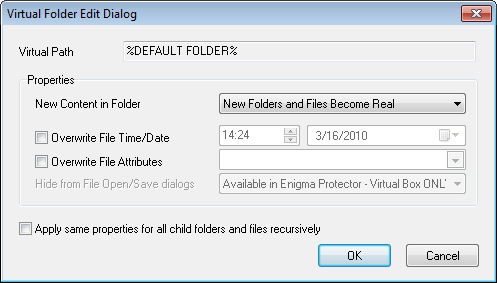
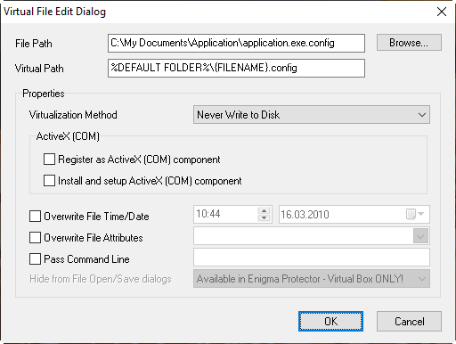
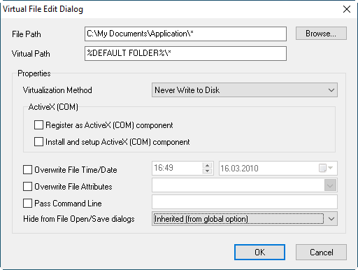

Allows to specify a list of a files/folders/drives that should be virtualized.

Right click on a file or folder to activate popup menu with additional options. The most easy way to add files and folders - using drag and drop from explorer to the tree.

Add - after you click the popup menu will apear, it allows to add:
Edit - edit file or folder properties
Remove - remove the file(s) or folder(s)
Files Options

Enable Files Virtualization - enables virtualization of file system
Compress Files - enable this option to compress embedded files. This may decrease the size of resulting executable file
Delete Extracted On Exit - this option allows to delete extracted files after application has finished. Note, this option works for files with "Always Write to Disk" or "Write if not Present" virtualization methods.

File Path - points to the real file that will be embedded. This file must exists. Click on Browse button to change the file.
Virtual Path - specify the position of the file in the virtual files list. Note, virtual path can be started from a root folder (relative path) or from a drive letter (absolute path). There are following root folder names that can be used for Virtual Path:
Examples:
Register as ActiveX (COM) component - if the option is enabled, Enigma Virtual Box will try to register this file as an ActiveX (COM) library at while start (the function DllRegisterServer is called). Please note, if the file run without administrator privileges then the registry access is limited and attempt to register ActiveX component in real registry fails. To avoid it, enable Registry Virtualization and make sure HKEY_CLASSES_ROOT key is set to virtual, so all registry changes (changes are being performed while ActiveX registration) are done in virtual registry only, without care of administrator privileges.
Install and setup ActiveX (COM) component - this option should be used with ActiveX files, it calls DllInstall function. The option Pass Command Line can be used to pass parameters to DllInstall.
Virtualization Method - specifies how the file will be processed, extracted to the disk on start or fully emulated in memory (recommended). There are available following options:
Overwrite File Date/Time - enter the date and the time values that will be applied to embedded file. If option is not checked, the time settings of real file are used.
Overwrite File Attributes - specify attributes for virtual file. If option is not checked, attributes of real file are used.
Hide files and folders from File Open/Save dialogs - Available in Enigma Protector only.

File Path - points to the real file that will be embedded. This file must exists. Click on Browse button to change the file.
Overwrite File Date/Time - enter the date and the time values that will be applied to this folder
Overwrite File Attributes - specify attributes for virtual folder
New Content in Folder - determines the behavior of virtualization system if application attempts to create new files and folders within virtual folder, it can be either:
Hide files and folders from File Open/Save dialogs - Available in Enigma Protector only.
Apply same properties for all child folders and properties recursively - assigns same properties to all nested files and folders
For some applications, the name of virtual file could be tied to the name of boxing file. Example, .NET applications that contain .config file, which name is tied the name of the main .exe file (eg, application main .exe file is application.exe and tied config file has a name application.exe.config). Adding such files to Virtual Box works well, until the boxed file got renamed. When boxed file is renamed, system can't find the tied config file (since the name of virtual file does not change) and application behavior could change.
To avoid such problems with boxed files, there are added so called "replacement variables", that can be used on virtual file name to make sure it matches the current name of boxed file. Such variables are:
Using replacement variables, the issue with .config files described above could be fixed, system will replace name of the virtual file to the name of the boxed file

It is possible to configure Virtual Box to add a set of virtual files automatically, during boxing (or package building) from files on the disk, using wildcard in file name.
Sometimes developers may need to force Virtual Box to load all files from the disk and add them to virtual box list (eg, in case the set of virtual files changes, to avoid re-configuration of Virtual Box every build), wildcard in a file name provides this ability.
Note, wildcards are working recursively for embedded folders.
Examples of wildcards
To configure a wirdcard, add any file to necessary virtual folder of Virtual Box. Open file Properties dialog. Add a wirdcard to the parameter File Name. Wildcard will be automatically accepted by Virtual Path parameter.
